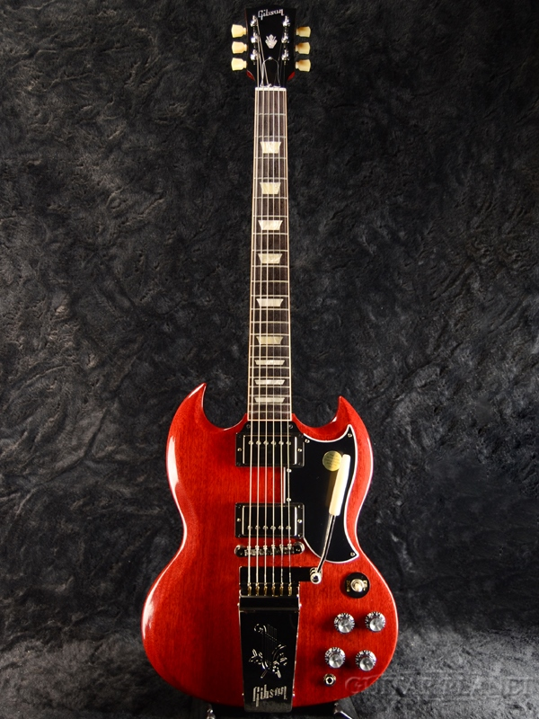
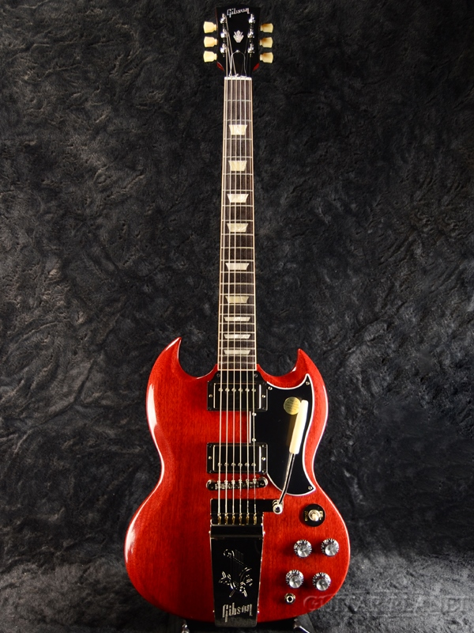

Gibson — американський виробник гітар. Штаб-квартира у Альбукерке у Нью-Мексико. Gibson також виробляє, або володіє такими марками гітар: Epiphone, Kramer, Valley Arts, Tobias, Steinberger і Kalamazoo. Також виробляє піаніно під маркою Baldwin; барабани — під маркою Slingerland. Інші марки Gibson: Aeolian, Chickering, Electar, Garrison, Gibson Amphitheatre, Hamilton, Maestro, MaGIC, Wurlitzer. Підприємство створене Орвилом Ґібсоном у кінці 1890-х років у Каламазу, Мічиган. Він почав будувати гітари з головою віолончелей. На початку 1950-х років підприємство почало виробляти електрогітари з найбільш відомими Les Paul. У кінці 1960-х років Gibson був придбаний Norlin corporation після чого почався занепад марки Gibson зі зниженням якості й новацій до 1986 року, коли підприємство було викуплене сьогоднішніми власниками. У 1974—1984 роках виробництво було перенесено у Нашвілл, Теннесі. Підприємство було куплене у 1986 році Генрі Юшкевичем, Давидом Берриманом й Ґарі Зебровським. Вони побудували нові підприємства у Мемфісі й Бозмані.
 

Відгуки:
Олег залишив(а) свій відгук - 27.03.2023
Ще коли вибирав гітару на сайті ця модель справила на мене дуже хороше враження чисто зовні, дуже презентабельний інструмент, виглядає цілком гідно. І все-таки не наважився купувати гітару без попереднього прослуховування, тому довелося приїхати в Київ і сходити в Музлайн особисто. Гітару в кінцевому підсумку все-таки купив, тому що інструмент дійсно непоганий за такі гроші. Дякую магазин.
Руслана залишив(а) свій відгук - 3.07.2023
Чудовий, продавець! Дуже допоміг, дякую!
Артем залишив(а) свій відгук - 1.02.2023
Норм